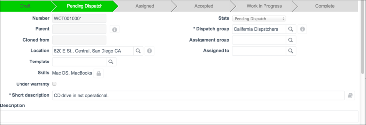
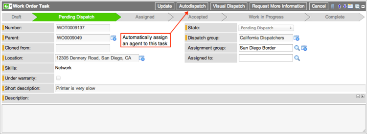
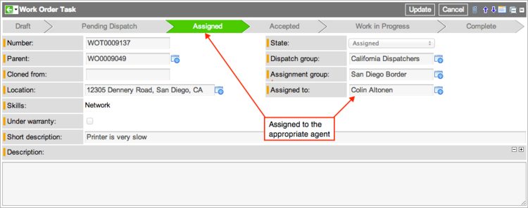

Using Auto-Dispatch - Versions Prior to Fuji
Contents
1 Overview
When the system auto-dispatches a task, it searches for a nearby agent who has the skills and the time available and assigns that agent to perform the task. You can auto-dispatch a task manually, with the click of a button, or configure the system to auto-dispatch a task when the task is qualified. When a user with the wm_qualifier or a combination role qualifies a task for a dispatch group for which auto-dispatch is enabled, the ServiceNow system automatically assigns an appropriate agent to the task and moves it to the Assigned state. If no appropriate agents are available, the system moves the task to the Pending Dispatch state. If tasks cannot be auto-dispatched, the dispatcher must adjust the values in the Work Order Task form and then auto-dispatch the task by clicking the Auto-Dispatch button. The system uses these criteria to dispatch agents automatically:
- Geolocation: The ServiceNow system uses geolocation tracking to find available agents when auto-dispatching a task.
- Skills: You can configure whether or not an agent's skills should be considered when auto-dispatching a task.
- Availability: The ServiceNow system considers an agent's availability when auto-dispatching additional tasks.
- Task windows: The ServiceNow system attempts to schedule within any configured task windows. If a window cannot be scheduled for any available agents, auto-dispatch fails.
- Task dependencies: The ServiceNow system considers any upstream task dependencies when auto-dispatching a task.
| |
Note: References to Work Management indicate that the information on this page is valid for ServiceNow versions prior to Fuji. In the Fuji release, Work Management was renamed Field Service Management. |
2 System Properties Affecting Auto-Dispatch
The ServiceNow system provides a number of properties that affect the way auto-dispatch calculates travel times and availability when attempting to match an agent with a task. These properties are available when you activate work management geolocation and configure a private key for Google Maps API for Business. This combination provides the greatest level of precision for locating and scheduling agents for automatic dispatch. Work management does not require the use of geolocation for auto-dispatch. However, tasks auto-dispatched without geolocation must use the travel time defined in the Estimated travel duration field in the task record and cannot consider other factors that affect travel, such as rush hour delays.
To dispatch agents automatically using geolocation, navigate to Work Management > Administration > Work Management Properties and configure for time-related factors and other dispatching considerations.
2.1 Rush Hour Allowances
ServiceNow provides the following properties that allow you to define the start and end times of the morning and evening rush hours. By default, no rush hours are defined.
- Morning rush hour span, formatted as 06:30-08:00.
- Evening rush hour span, formatted as 14:30-16:00.
2.2 Travel Time Percentage Buffer
Use the Percentage to add to all travel times property to specify a time buffer for travel between tasks, expressed as a percentage of the total travel time. This buffer allows an agent's schedule to accommodate travel delays, such as a fuel stop. The default value for this property is 0. A common setting is 15.
2.3 Work Spacing
Use the Amount of time (in minutes) to add between the end of a task and the travel start of the next property to add additional time between the conclusion of one task and the beginning of travel to the next task. This is to accommodate such things as cleanup and paperwork after the task is finished. The default for this property is 0.
2.4 Toll Roads
Use the Allow toll roads to be used property to include toll roads when automatically routing or dispatching an agent. The default setting for this property is enabled.
2.5 Default Start and End Times
Use the following properties to specify start and end times for agents. The system uses these times to auto-dispatch tasks to any agent who does not have a predefined schedule or a continuing task from the previous day.
- Default start time for all work agents when no schedule is set, formatted as 08:00.
- Default end time for all work agents when no schedule is set, formatted as 17:00.
2.6 Matching Skills
Use the Work management should only allow agents to be selected whose skills match all skills for the work order task property to determine if the system should consider agent skills when auto-dispatching work order tasks. By default, this property is enabled, so that ServiceNow evaluates each agent by skills and location when auto-dispatching a task. When this property is disabled, so the system considers location only.
2.7 Processing Count
Use the Sets the maximum number of agents that will be processed by auto-dispatch at a time property to specify the maximum number of work agents the system should evaluate when auto-dispatching a task. The system can only process up to 500 agents at a time. Make sure to set this value at or above the number of agents in your largest dispatch group. Otherwise, ServiceNow displays an error message and fails to auto-dispatch the task.
3 Configuring Groups for Auto-Dispatch
Users with the admin or wm_admin role can configure auto-dispatch for dispatch groups.
- Navigate to ServiceNow group records using one of these paths.
- User Administration > Groups
- Work Management > Administration > Dispatch Groups
- Click New or open an existing group.
- Configure these fields:
- Auto-dispatch: Select this check box.
- Roles: Select the related list and assign the wm_dispatcher role to this group.
- Group Members: Select this related list and assign users to this group.
- See Creating Groups for information about the other fields on this form.
- Click Submit.
{kind=link}
4 Auto-Dispatching at Qualification
Users with the wm_qualifier and wm_initiator_qualifier roles can dispatch a task automatically at qualification by assigning it to a dispatch group when the Requests are dispatched via auto-assignment option is set in Work Management Configuration (starting with the [[Fuji_Release_Notes|Fuli release).
- Open a work order that is in the Awaiting Qualification state or one that has been qualified automatically.
- Open a task in the Draft state.
- Select a Dispatch group.
- Enter a location if the Location should be used property is turned on.
- When the Location should be used property is turned on, auto-dispatch will fail unless the task contains a valid location.
- In the Planned section, create a schedule for this task or let ServiceNow determine the times. For instructions, see Creating Work Order Tasks.
- By default, ServiceNow enters the current date and time in the Window start field. If you do not create a schedule or a fixed window, ServiceNow uses the Window start value to look for an agent who has that time slot open.
- Click Qualified.
- The view returns to the previous page, and a success message appears. The system assigns an agent to the task, enters the agent's assignment group in the task record, and moves the state to Assigned.
- 
- If auto-dispatch fails, the message indicates either that no agent was available or that the task did not specify a location. The system moves tasks that fail auto-dispatch to the Remain in the Pending Dispatch state.
- To auto-dispatch a task that failed previously, enter any missing information or change the schedule, and then click Auto-Dispatch.
{kind=link}
{kind=link}
5 Auto-Dispatching from Pending Dispatch
Users with the wm_dispatcher or wm_initiator_qualifier_dispatcher role can auto-dispatch any task in the Pending Dispatch state that does not have a value in the Assigned to field.
- Navigate to Work Management > Dispatching > My Dispatch Queue.
- All tasks in the list are filtered to show only tasks in the Pending Dispatch state.
- Auto-dispatch tasks using one of these methods:
- Select one or more tasks in the list, and then select Auto-Dispatch from the Actions choice list.
- Open a task from the list and click Auto-Dispatch in the task record.
- 
- The view returns to the previous page, and a success message appears. The system assigns an agent to the task, enters the agent's assignment group in the task record, and moves the state to Assigned. The task is now subject to acceptance by the agent. If the agent rejects the task, the system moves it back to the Pending Dispatch state.
- 
- If auto-dispatch fails, the message indicates either that no agent was available or that the task did not specify a location. The system moves tasks that fail auto-dispatch to the Pending Dispatch state.
- To auto-dispatch a task that failed previously, provide any missing information or change the schedule, and then click Auto-Dispatch.
{kind=link}
{kind=link}
{kind=link}